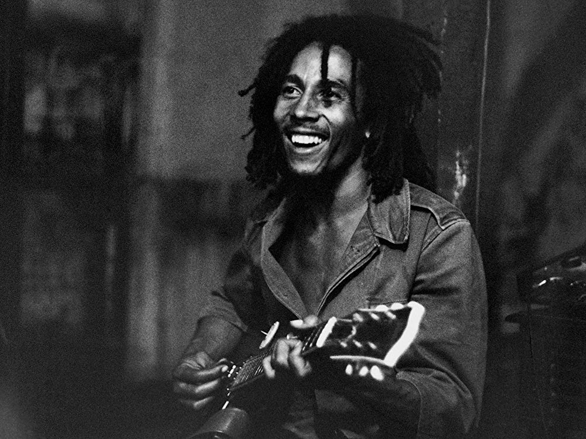

Bob Marley
Su verdadero nombre fue Robert Nesta Marley Booker. Nacio el 6 de febrero de 1945 en Jamaica. Fue principal figura y difusor de la música reggae.
Por Karen Farrando
Su madre, Cedella Booker, afroamericana y su padre, Norval Marley, era jamaiquino blanco de ascendencia inglesa. Cuyo padre falleció cuando Bob tenía 10 años. En su niñez y primera adolescencia tuvo que soportar burlas de sus vecinos por el hecho de ser mulato, aunque al hacerse mayor esto fue un hecho de menor importancia. Pasó los primeros años llenos de penurias económicas. Su casa no tenía agua ni electricidad y su madre luchó por sacarlo adelante. Cedella empezó una relación con el padre del que sería uno de los mejores amigos de Bob, Bunny Wailer. La familia se traslada a vivir a Kingston, la capital de Jamaica, buscando mejorar sus condiciones de vida.
SUS
COMIENZOS
Junto con Bunny comenzó a interesarse por la música y, al mismo tiempo que alternaba su trabajo en una fundición, donde se quemó un ojo, daba sus primeros pasos musicales. Ambos asistieron a clases de música donde conocieron al joven músico Peter Tosh. En 1962, se presenta a una audición y el productor le ofrece hacer unas grabaciones. Bob piensa que lo mejor es hacer un grupo, con Bunny y Peter forman Wailing Wailers (Gritos de Protesta). La visita a la isla del emperador Hailè Selassiè supuso un impulso para las creencias rastafari, Bob comenzó a reflejar en su música esta filosofía.
El dinero no puede comprar vida
Bob Marley
El dinero no puede comprar vida
Bob Marley
SU
GRAN
EXITO
Su esposa, Rita comienza a tener cierto éxito y Bob crea una nueva banda, The Wailers, junto con Peter y Bunny. A mediados de los años 70, Jamaica vive una época dedisturbios callejeros por el enfrentamiento entre conservadores y progresistas, llevando al país a una gran inseguridad ciudadana. El 3 de diciembre de 1976, Bob, su esposa Rita, Lewis Griffith y el manager Don Taylor son tiroteados en su casa por pistoleros conservadores. A los dos días del atentado se sube de nuevo a un escenario y cuando le preguntan el porqué dice: “ La gente que está tratando de hacer este mundo peor no se toma un día libre. ¿Como podía tomarlo yo?. Ilumina la oscuridad”. Más tarde se marcha a vivir a Londres, temiendo nuevos atentados, y allí graba Éxodus que fue el disco más importante del reggae y de su carrera. En 1978 sale un nuevo disco, Kaya, otro gran éxito. Viaja a Jamaica para dar un concierto y consigue en el escenario que el primer ministro y el jefe de la oposición se den la mano en el escenario tratando de frenar la violencia en el país. Las O:N.U., con sede en Nueva York, le concede la Medalla de la Paz. A finales de ese año viaja a Kenia y Etiopía que es el centro espiritual rastafari. De la última gira por Estados Unido y Europa, sacan a la venta el disco en directo Babylon By Bus Survival, incluía el himno Zimbabwe. Cuando Rodesia consigue la indepedencia y se forma el nuevo estado de Zimbabwe es invitado por el gobierno para tocar en la ceremonia oficial en abril de 1980. En mayo de 1980 lanzan Uprising, que es otro éxito en las listas y en la gira europea bate todos los records de asistencia de público.
IDEOLOGÍA
VS
ENFERMEDAD
Marley solia realizar partidos de fútbol en los países en los que actuaba , ya que era un gran amante de este deporte, Bob recibió un pisotón accidental , cuyo dolor era tan fuerte que fue trasladado al hospital .Una vez allí le detectaron un cáncer maligno. Marley debía acceder a la amputación de su dedo, pero se negó rotundamente ya que los rastas no pueden quitarse ninguna parte de su cuerpo. Tiempo después el cáncer se expandió a su cerebro,pulmones, hígado y estomago . A partir de ese momento accedió a ser tratado pero fue demasiado tarde , y el 11 de mayo de de 1981 fallece a sus 36 años.